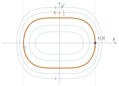

STEP III 2013, 문제 7
계속 읽기 전에 문제를 먼저 읽어 보자. 문제는 STEP Support Programme의 문제 데이터베이스에 있다: step.maths.org/questions/13-s3-q7
도입
대부분의 미분방정식(differential equation)은 풀 수 없다. \(y'' + y^3 = 0\)의 해를 익숙한 함수로 나타내는 공식은 없으며, 소문항 (iii)의 괴물 같은 방정식은 더 말할 것도 없다. 그런데도 해에 대해서는 많은 것을 말할 수 있다. 해가 유계(bounded)로 머문다는 것, 진동(oscillate)한다는 것, 어떤 상태로 안정된다는 것 등이다. 비결은 해와 그 도함수로 만든 양 가운데 절대 증가하지 않는 것을 찾는 것이다. 그러면 해는 그 안에 갇힌다.
물리학에서 그런 양은 대개 에너지(energy)이다. 그릇 안에서 구르는 공은 처음 높이보다 높이 올라갈 수 없다. 에너지가 보존되거나, 마찰이 있으면 감소하기 때문이다. 이 문제는 같은 추론을 세 방정식에 적용하는데, 마지막 방정식은 “에너지”를 스스로 만들어 내야 하도록 골라져 있다. 1892년 알렉산드르 랴푸노프(Aleksandr Lyapunov)가 고안한 이 방법은 미분방정식 연구에서 가장 중요한 도구 가운데 하나이다.
시작하기 전에
소문항 (i)에서 \(y\)를 입자의 위치로, \(x\)를 시간으로 생각하자. 그러면 \(y'' = -y^3\)은 힘이 \(-y^3\)인 뉴턴(Newton)의 법칙이다. 운동 에너지(kinetic energy)와 위치 에너지(potential energy)는 무엇인가?
운동 에너지는 (질량을 \(1\)로 두면) \(\frac12(y')^2\)이고, 힘은 \(-V'(y)\)이므로 힘 \(-y^3\)은 위치 에너지 \(V(y) = \frac14y^4\)에서 나온다. 전체 에너지는 \(\frac12(y')^2 + \frac14y^4\)이고, 이는 \(\mathrm{E}\)의 절반이다. 에너지 보존(conservation of energy)이 말하는 것이 바로 \(\mathrm{E}\)가 상수라는 사실이다.
차근차근 풀기
단계 1 보존
연쇄법칙(chain rule)에 의해 \[\frac{\mathrm{d}\mathrm{E}}{\mathrm{d}x} = 2y'y'' + 2y^3y' = 2y'\bigl(y'' + y^3\bigr) = 0.\] 따라서 \(\mathrm{E}\)는 상수이고, \(x = 0\)에서의 값과 같다: \(\mathrm{E} = 0 + \frac12 = \frac12\). \((y')^2 \geq 0\)이므로 \(\frac12y^4 \leq \frac12\)이고, 따라서 \(y^4 \leq 1\), 즉 \(|y| \leq 1\)이다.■
해는 \(-1\)과 \(1\) 사이에서 진동하며, \((y, y')\) 평면에서 닫힌곡선 \((y')^2 + \frac12y^4 = \frac12\)를 그린다(그림 8.2.1).
단계 2 소산(dissipation)
\(\mathrm{E} = (v')^2 + 2\cosh v\)를 미분하라. 미분방정식을 이용해 \(v''\)를 바꾸어 넣어라. 결과의 부호는 어떠한가?
\[\frac{\mathrm{d}\mathrm{E}}{\mathrm{d}x} = 2v'v'' + 2\sinh v\,v' = 2v'\bigl(v'' + \sinh v\bigr) = 2v'\bigl(-xv'\bigr) = -2x(v')^2 \leq 0 \quad\text{단, } x \geq 0.\] 항 \(xv'\)은 마찰(friction)처럼 작용하여 에너지를 없앤다. 따라서 \(x \geq 0\)에서 \(\mathrm{E}(x) \leq \mathrm{E}(0)\)이다. \(x = 0\)에서 \(\cosh(\ln 3) = \frac{3 + \frac13}{2} = \frac53\)이므로 \(\mathrm{E}(0) = \frac{10}{3}\)이다. 그러므로 \[2\cosh v \leq (v')^2 + 2\cosh v = \mathrm{E}(x) \leq \tfrac{10}{3}, \qquad\text{따라서}\qquad \cosh v(x) \leq \tfrac53. \qed\]
단계 3 에너지 만들어 내기
소문항 (iii)에는 아무런 힌트가 없다. 증가하지 않는 함수 \(\mathrm{E} = (w')^2 + F(w)\)를 찾아야 한다.
\(\mathrm{E} = (w')^2 + F(w)\)이면 \(\mathrm{E}' = 2w'w'' + F'(w)w'\)이다. 방정식을 이용해 \(w''\)를 바꾸어 넣었을 때 \((w')^2\)의 배수만 남으려면 \(F'(w)\)는 무엇이어야 하는가?
\(\mathrm{E}' = 2w'\bigl(w'' + w\cosh w + 2\sinh w\bigr)\)이 되기를 원하므로 \(F'(w) = 2(w\cosh w + 2\sinh w)\)가 필요하다. \(\frac{\mathrm{d}}{\mathrm{d}w}(w\sinh w) = \sinh w + w\cosh w\)이므로 다음과 같이 잡을 수 있다. \[F(w) = 2w\sinh w + 2\cosh w, \qquad \mathrm{E} = (w')^2 + 2w\sinh w + 2\cosh w.\] 그러면 방정식을 이용하여 다음을 얻는다. \[\frac{\mathrm{d}\mathrm{E}}{\mathrm{d}x} = -2(5\cosh x - 4\sinh x - 3)(w')^2.\]
모든 \(x\)에 대하여 \(5\cosh x - 4\sinh x - 3 \geq 0\)임을 보여라. (\(e^x\)로 나타낸 다음 완전제곱식(perfect square)을 찾아보라.) 그런 다음 논증을 마무리하라.
\(5\cosh x - 4\sinh x - 3 = \frac52(e^x + e^{-x}) - 2(e^x - e^{-x}) - 3 = \frac12e^x - 3 + \frac92e^{-x} = \frac12\bigl(e^{x/2} - 3e^{-x/2}\bigr)^2 \geq 0\)이다. 따라서 \(\mathrm{E}\)는 절대 증가하지 않는다. \(x = 0\)에서 \(\mathrm{E}(0) = \frac12 + 0 + 2 = \frac52\)이다. 모든 \(w\)에 대하여 \(w\sinh w \geq 0\)이므로(두 인수의 부호가 같다) \[2\cosh w \leq (w')^2 + 2w\sinh w + 2\cosh w = \mathrm{E}(x) \leq \tfrac52, \qquad\text{따라서}\qquad \cosh w(x) \leq \tfrac54. \qed\]

돌아보기
\(y'\)을 곱하라. 각 소문항에서 \(\mathrm{E}'\)은 방정식 좌변의 \(2y'\)배에 남은 항을 더한 것이었다. 그 남은 항이 \(\mathrm{E}\)가 보존되는지 감소하는지를 결정했다.
에너지가 위치를 제한한다. 운동 에너지 부분 \((y')^2\)이 음이 아니므로, \(\mathrm{E}\)에 대한 한계는 곧 위치 에너지 부분에 대한 한계이고, 따라서 \(y\)에 대한 한계이다.
숨은 제곱을 찾아라. 소문항 (iii)의 감쇠 계수(damping coefficient)는 부호가 바뀔 것처럼 보였지만, 실은 모습을 감춘 완전제곱식이었다.
숨은 수학
1892년 박사 학위 논문에서 랴푸노프는 운동의 안정성(stability)을 연구했다. 계를 평형(equilibrium)에서 살짝 흐트러뜨리면 다시 돌아오는가, 아니면 멀리 떠나가는가? 그의 “제2방법”은 평형에서 가장 작고 해를 따라 절대 증가하지 않는 함수, 오늘날 랴푸노프 함수(Lyapunov function)라고 부르는 함수를 찾는 것이었다. 그러면 평형 근처에서 출발한 해는 계속 그 근처에 머문다. 이 방법의 아름다움은 해의 공식이 전혀 필요 없고 미분방정식 자체만 있으면 된다는 데 있으며, 이 문제가 보여 주는 것이 바로 그 점이다. 오늘날 랴푸노프 함수는 항공기 제어 시스템에서 전력망, 생태계에 이르기까지 온갖 것의 안정성을 증명하는 데 쓰인다.
물리학과 공학에서의 에너지
소문항 (i)은 비선형 진동자(nonlinear oscillator)이다. 용수철과 비슷하지만, 복원력(restoring force)이 변위(displacement)의 세제곱에 비례한다. 단순 조화 진동자(simple harmonic oscillator)와 달리 주기(period)가 진폭(amplitude)에 따라 달라지지만(진동이 클수록 빠르다), 에너지 보존 때문에 여전히 갇혀 있다. 소문항 (ii)는 시간에 따라 커지는 감쇠(damping)를 더하며, 에너지가 빠져나간다. 공학에서는 구조물이 스스로 흔들려 부서지지 않는다는 것, 제어 시스템이 통제를 벗어나 진동하지 않는다는 것을 보이는 데 에너지 방법(energy method)이 쓰인다. 편미분방정식(partial differential equation) 이론에서는 이런 종류의 “에너지 추정(energy estimate)”이 해가 존재하고 잘 행동함을 증명하는 주된 도구이다. 유체 흐름 방정식에 관한 문제들, 그 가운데 밀레니엄 상 문제(Millennium Prize Problems)의 하나인 나비에–스토크스 문제(Navier–Stokes problem)도 결국 그러한 한계를 찾을 수 있느냐로 귀결된다.
사고 기술
방정식을 풀 수 없다면, 해로 만든 양 가운데 도함수의 부호가 일정한 것을 찾아라. 그 양이 해의 범위를 제한해 줄 것이다.
이 탐색은 물리학(“에너지는 무엇인가?”)과 대수(“도함수가 간단히 정리되려면 무엇을 더해야 하는가?”)의 안내를 받는다. 소문항 (iii)은 기댈 물리적 직관이 없을 때 대수적인 길을 보여 준다.
더 도전하기
단진동. \(y(0) = A\), \(y'(0) = 0\)인 \(y'' + y = 0\)에 대하여 보존되는 에너지를 구하고 \(|y| \leq A\)임을 이끌어 내라. 정확한 해와 비교하여 확인하라.
진자. 진자(pendulum)의 각 \(\theta\)는 (적당한 단위에서) \(\theta'' + \sin\theta = 0\)을 만족한다. \((\theta')^2 - 2\cos\theta\)가 상수임을 보여라. 진자가 \(|\theta_0| \leq \pi\)인 각 \(\theta_0\)에서 정지 상태로 출발하면 \(|\theta|\)가 결코 \(|\theta_0|\)를 넘지 않음을 보여라. \(|\theta_0| > \pi\)이면 무엇이 잘못되는가?
감쇠. \(k > 0\)일 때 \(y'' + 2ky' + y = 0\)에 대하여 \((y')^2 + y^2\)이 감소함을 보여라. 이 값은 반드시 0으로 수렴하는가?
탈출. \(y(0) = 1\), \(y'(0) = 0\)인 \(y'' - y^3 = 0\)에 대하여 보존량(conserved quantity)을 구하고, 그 보존량으로는 \(y\)를 유계로 묶을 수 없음을 보여라. 무엇이 잘못되는가?
더 읽을거리
Steven Strogatz, Nonlinear Dynamics and Chaos (CRC Press). 제 6장과 제 7장에서 위상 평면(phase plane), 보존계(conservative system), 랴푸노프 함수를 다룬다.
D. W. Jordan & P. Smith, Nonlinear Ordinary Differential Equations (Oxford University Press). 에너지 방법의 예가 많이 실린 표준 학부 교재이다.
Keith Devlin, The Millennium Problems (Basic Books). 나비에–스토크스 문제에 대한 이해하기 쉬운 설명이 실려 있다.